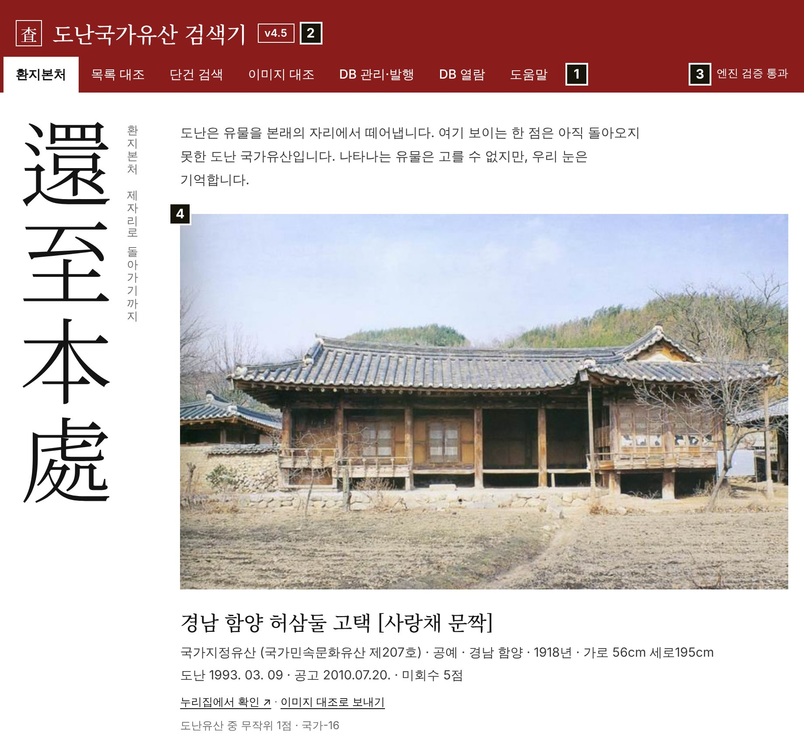
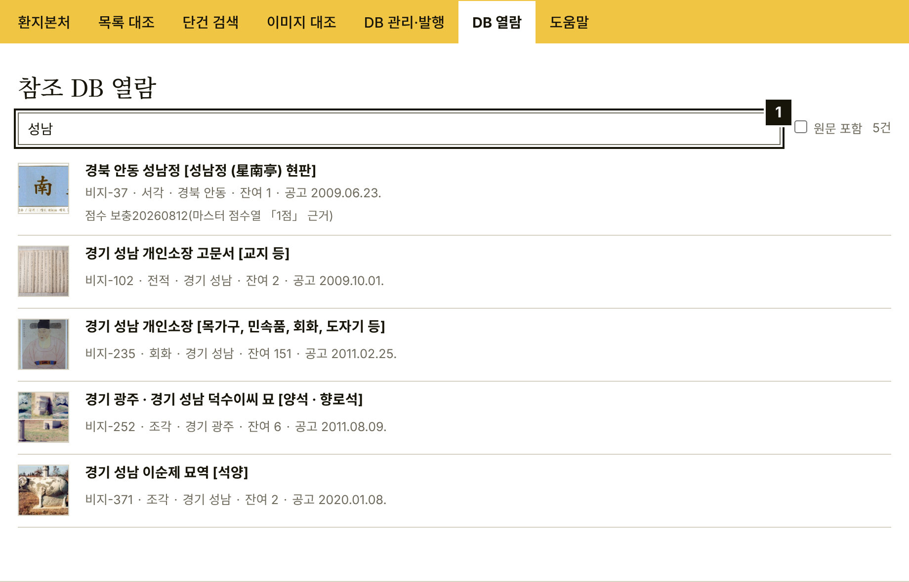
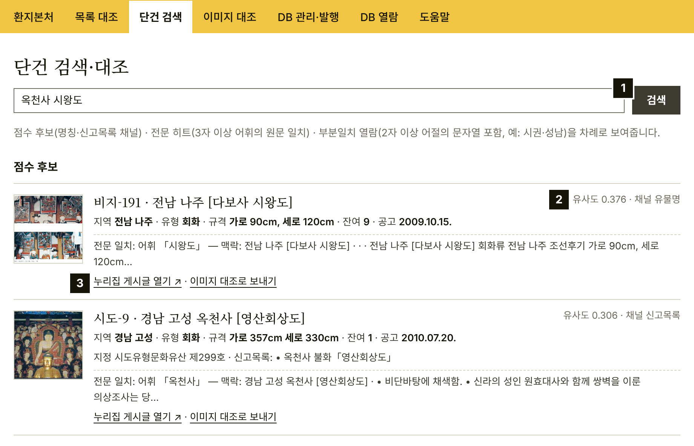
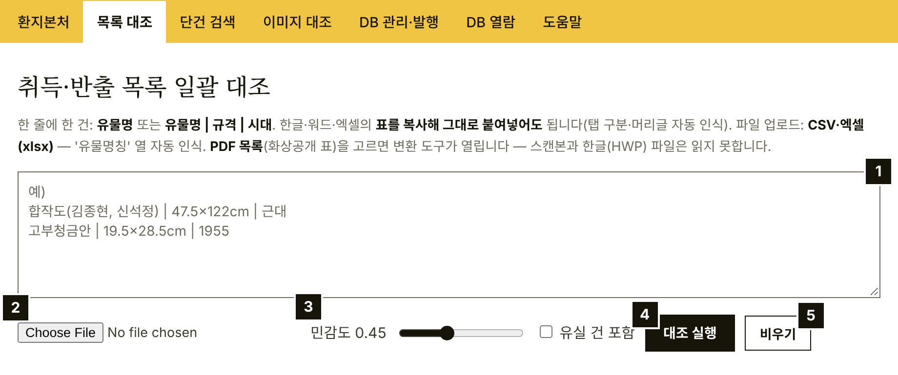
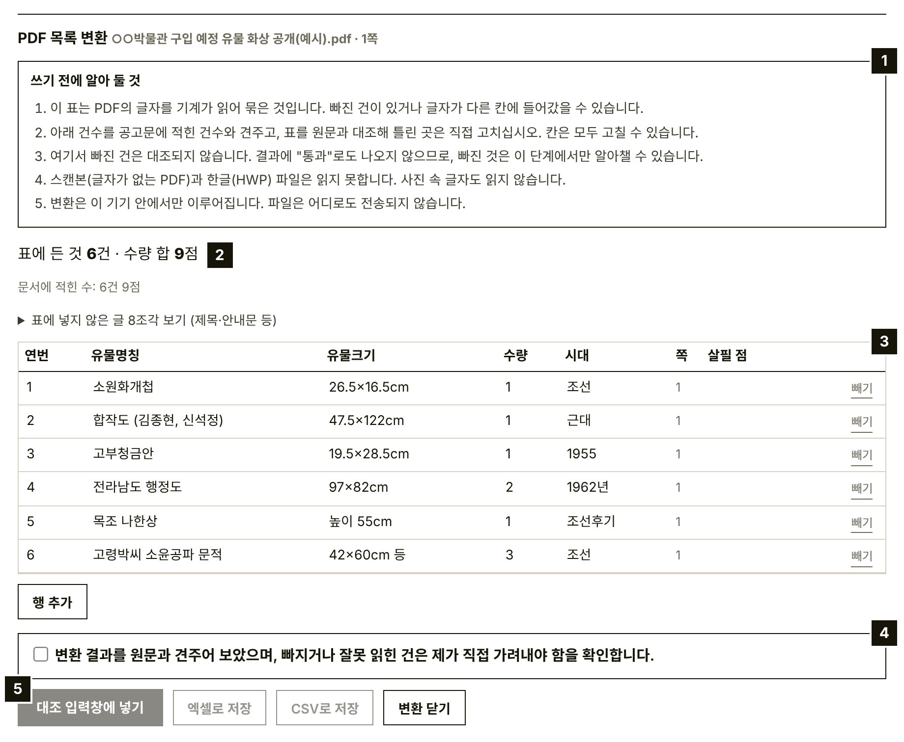
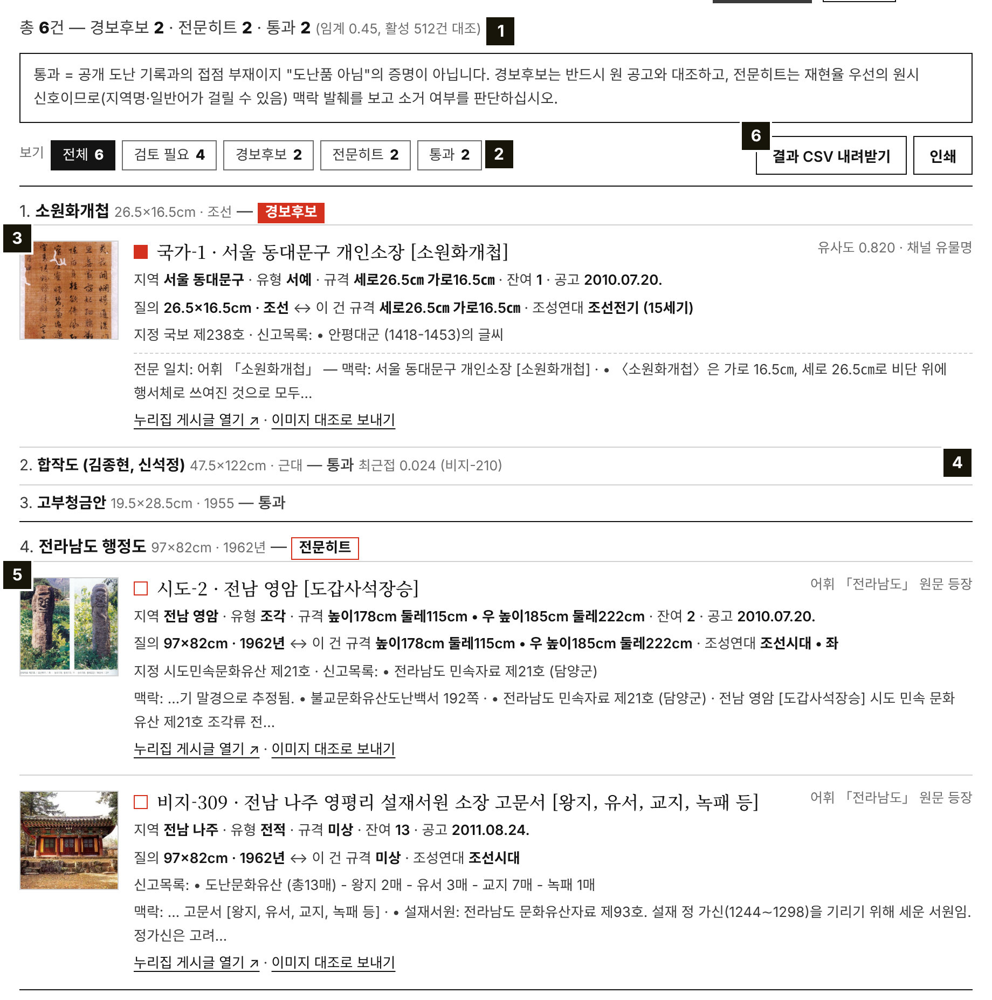
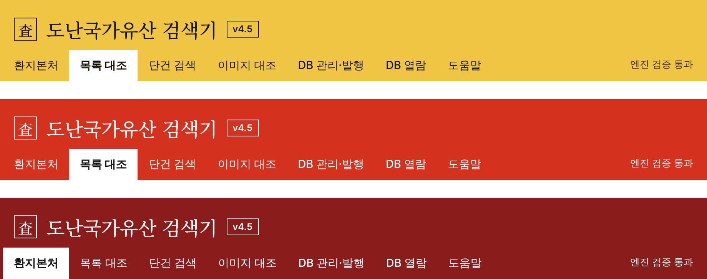
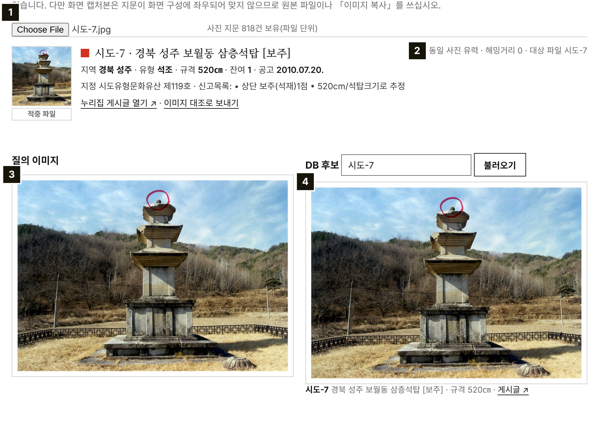

이 도구가 하는 일
이 도구는 "이 물건이 도난품인지"를 판정하지 않습니다. 공개된 도난 기록 513건과 견주어 비슷한 기록이 있는지 보여줄 뿐이며, 최종 판단은 언제나 사람이 합니다.
설치나 로그인 없이 브라우저에서 바로 쓸 수 있고, 입력한 자료는 어디로도 전송되지 않습니다. 목록을 넣으면 한 건씩 경보후보·전문히트·통과로 갈라 보여 주고, 사진을 넣으면 도난 기록의 사진과 견줍니다.
처음 쓰시는 분은 1~4번만 읽어도 됩니다. 심사 업무에 쓰시거나 도입을 검토하시는 분은 5~7번을 함께 읽어 주세요 — 자료의 기준일, 실무 절차, 잡히지 않는 범위와 검증 방법이 거기 있습니다.
차례
- 1 한눈에 보기 화면 구성 · 바로 해보기
- 2 목록 대조 넣을 수 있는 것 · PDF 목록 변환
- 3 결과 읽는 법 세 가지 판정 · 머리 색 · 걸러 보기 · 남기기
- 4 이미지 대조와 그 한계
- 5 표시와 자료 범위 상태 표시 · 자료 기준일
- 6 심사 실무에서 쓰는 법 취득 심사 · 반출 감정 · 경보후보가 떴을 때
- 7 못 잡는 것, 그리고 믿어도 되는 근거
- 8 자주 묻는 것
1한눈에 보기

- 1탭 — 하는 일에 따라 고릅니다. 아래 표를 보세요.
- 2판 번호 — 지금 쓰는 판본입니다. 문의하거나 심사 기록을 남길 때 함께 적어 주세요.
- 3스스로 시험한 결과 — 열 때마다 알려진 도난 건 네 건을 조회해 봅니다. 「엔진 검증 통과」가 아니면 그 판본을 쓰지 마십시오(7번).
- 4오늘의 한 점 — 사진과 이름, 도난·공고 날짜, 누리집 공고로 가는 길이 함께 나옵니다.
| 탭 | 용도 |
|---|---|
| 환지본처 | 열 때마다 아직 돌아오지 못한 도난 유산 한 점을 보여줍니다. 還至本處 — 제자리로 돌아가기까지. |
| 목록 대조 | 여러 건을 한꺼번에 — 엑셀·CSV 파일을 올리거나 한글·워드·엑셀 표를 복사해 붙여넣으면 전 건을 일괄 대조합니다. PDF 목록은 변환 도구로 표를 읽어 넣습니다. 구입 목록·기증 목록 심사에 씁니다(2·3번). |
| 단건 검색 | 한 건을 자세히 — 유물 이름을 넣고 대조합니다. 이름 전체보다 특징 단어 몇 개가 낫습니다. |
| 이미지 대조 | 사진을 넣어 도난 기록의 사진과 견줍니다. 단, 한계가 있습니다 — 4번을 꼭 읽어 주세요. |
| DB 열람 | 기록 513건 전체를 대표 사진과 함께 훑어봅니다. 필터에 지역·인명·유물명 아무거나 넣습니다. 기본 필터는 유물명·지역·번호를 봅니다. 「원문 포함」을 켜면 공고 원문과 신고목록 비고까지 훑습니다. |
| 도움말 | 짧은 설명과 이 사용 안내로 가는 길. (「DB 관리·발행」 탭은 운영자용입니다.) |
바로 해보기
우리 지역에 도난 유산이 있는지 궁금할 때
DB 열람→필터에 성남
→ 5건이 나옵니다 — 개인소장 고문서, 개인소장 목가구·회화·도자기, 덕수이씨 묘 양석·향로석, 이순제 묘역 석양, 그리고 안동 성남정 현판.
마지막 하나는 지명이 아니라 정자 이름입니다. 필터는 글자가 들어 있으면 걸러 주므로 이런 것도 함께 나옵니다.
인물로 찾을 때
DB 열람→이순신
→ 5건 — 쌍룡검, 난중일기 초고본(을미일기), 감결 등.
안중근을 치면 유묵이, 권율을 치면 행주산성 소장 영정이 나옵니다.
특정 유물이 걸리는지 확인할 때
단건 검색→생원시 시권 · 옥천사 시왕도 · 장군석
→ 비슷한 도난 기록이 점수와 함께 나옵니다.

- 1필터 — 글자를 넣는 대로 걸러집니다. 오른쪽에 건수가 나옵니다.

- 1찾을 말 — 이름 전체보다 특징 단어 몇 개가 낫습니다.
- 2유사도 · 채널 — 얼마나 비슷한지(0~1)와 어디서 맞았는지입니다(3번).
- 3누리집 게시글 열기 — 국가유산청 원 공고로 바로 갑니다. 「이미지 대조로 보내기」는 이 기록의 사진을 4번 화면에 띄웁니다.
짧은 단어도 됩니다. 점수가 낮아 후보로 안 잡히면 화면 아래 「부분일치 열람」이 같은 단어가 든 기록을 대신 보여줍니다 — 시권처럼 두 글자짜리 질의도 이 경로로 확인됩니다(3건이 나옵니다). 단건 검색은 경보를 내지 않습니다. 후보를 보여 줄 뿐이어서 머리 색도 바뀌지 않습니다.
2목록 대조
구입 목록·기증 목록처럼 여러 건을 한꺼번에 대조합니다.

- 1입력창 — 한 줄에 한 건. 유물명만 써도 되고, 유물명 | 규격 | 시대로 써도 됩니다. 표를 복사해 그대로 붙여넣어도 됩니다.
- 2파일 고르기 — 엑셀(xlsx)·CSV·PDF.
- 3민감도 — 경보 기준입니다. 기본값 0.45를 그대로 두시길 권합니다(3번). 「유실 건 포함」을 켜면 유실 공고 11건도 대조 대상에 넣습니다.
- 4대조 실행
- 5비우기 — 입력창과 대조 결과를 한 번에 치웁니다. 잘못 눌렀으면 바로 나오는 「입력 되돌리기」로 입력을 다시 넣을 수 있습니다.
넣을 수 있는 것
받는 형식은 세 가지입니다.
- 파일 올리기 — 엑셀(xlsx)과 CSV. CSV는 반드시 파일로 올리십시오. 내용을 복사해 붙여넣으면 따옴표 처리 때문에 여러 칸이 한 줄로 붙어 잘못 읽힙니다.
- 표 붙여넣기 — 한글·워드·엑셀 문서 안의 표를 복사해 그대로 붙여넣는 경우. 머리글은 자동으로 알아봅니다.
- PDF 목록 변환 — 화상공개 공문처럼 표가 든 PDF. 파일을 고르면 변환 도구가 열립니다(아래).
표에는 유물명 열 하나만 있어도 되고, 규격·수량·시대 열이 함께 있으면 정확도가 올라갑니다. 그리고 목록 대조는 글자 대조입니다. 올린 목록이나 문서에 사진이 실려 있어도 그 사진은 견주지 않습니다. 사진까지 확인하려면 이미지 대조에 사진 파일을 따로 올려야 합니다.
PDF로 받은 목록 — 변환 도구
파일 고르기에서 PDF를 고르면 표를 읽어 고칠 수 있는 표로 보여 줍니다. 다만 결과는 직접 확인해야 합니다.
변환은 이 기기 안에서만 이루어지며 파일은 어디로도 전송되지 않습니다. 외부 변환 사이트나 AI 서비스에 문서를 올리면 그 순간 자료가 기관 밖으로 나가므로, 공개된 문서가 아니면 그런 곳에 올리지 마십시오.

- 1쓰기 전에 알아 둘 것 — 다섯 가지 조건.
- 2건수와 수량 합 — 공고문에 적힌 수와 견줍니다. 문서에서 찾은 수가 있으면 그 아래에 함께 나옵니다.
- 3고칠 수 있는 표 — 칸마다 고치고, 행을 더하거나 뺄 수 있습니다.
- 4확인란 — 여기에 표시해야 아래 단추가 풀립니다.
- 5대조 입력창에 넣기 · 엑셀로 저장 · CSV로 저장
- 건수를 견줍니다. 표 위에 「표에 든 것 ○건 · 수량 합 ○점」이 나옵니다. 공고문에 적힌 건수·점수와 같은지 봅니다. 연번이 건너뛰면 빠진 번호를 알려 줍니다.
- 원문과 대조해 고칩니다. 기계가 읽은 것이라 글자가 옆 칸에 들어가거나 건이 빠질 수 있습니다. 「살필 점」 칸에 적힌 행부터 보십시오.
- 확인란에 표시합니다. 「빠지거나 잘못 읽힌 건은 제가 직접 가려내야 함을 확인합니다」에 표시해야 세 단추를 쓸 수 있습니다.
- 「대조 입력창에 넣기」를 누른 뒤 「대조 실행」을 누릅니다. 넣기만으로는 대조하지 않습니다.
읽지 못하는 것:
- 스캔본 — 종이를 스캔한 PDF에는 글자가 없습니다. 「글자가 없습니다」라고 알리고 멈춥니다. 눈으로 옮겨 적어야 합니다.
- 한글(HWP) 파일 — 표를 복사해 붙여넣거나, PDF로 저장한 뒤 변환하십시오.
- 낯선 짜임의 표 — 연번·명칭·크기·수량·시대가 든 표를 읽도록 만들었습니다. 다른 짜임이면 「목록 표를 알아보지 못했습니다」라고 나오거나 엉뚱하게 읽힐 수 있습니다. 그럴 때는 원본 문서를 받거나, 엑셀의 PDF 가져오기(데이터 → 데이터 가져오기 → 파일에서 → PDF)를 쓰거나, 직접 옮겨 적으십시오.
- 사진 — PDF에 실린 유물 사진은 읽지도 견주지도 않습니다.
3결과 읽는 법

- 1요약 — 전체 건수와 갈래별 건수, 경보 기준.
- 2보기 단추 — 누른 갈래만 화면에 남습니다.
- 3경보후보 카드 — 이름 앞에 채운 네모, 오른쪽에 유사도.
- 4통과 — 카드 없이 한 줄.
- 5전문히트 카드 — 이름 앞에 테두리 네모, 오른쪽에 걸린 단어.
- 6결과 CSV 내려받기 · 인쇄
| 표시 | 뜻 | 하실 일 |
|---|---|---|
| 경보후보 | 이름이 도난 기록과 상당히 비슷합니다. | 카드의 「누리집 게시글 열기」로 국가유산청 원 공고를 열어 규격·사진을 직접 대조하세요. |
| 전문히트 | 이름 전체는 다르지만 드문 단어가 기록 원문에 등장합니다. | 함께 표시되는 원문 발췌를 읽고 관련이 있는지 판단하세요. 지역명·일반어가 우연히 걸리기도 합니다. |
| 통과 | 공개 도난 기록과 접점이 없습니다. | "도난품 아님"의 증명이 아닙니다. 기록에 없을 뿐입니다. |
머리 색이 알리는 것

일하는 탭은 노란색으로 열리고, 목록 대조와 이미지 대조에서 경보후보가 하나라도 있으면 붉은색으로 바뀝니다. 전문히트뿐이거나 통과뿐이면 노란색 그대로입니다. 안심을 뜻하는 색은 두지 않았습니다. 통과는 접점 부재일 뿐입니다. 첫 화면(환지본처)은 아직 돌아오지 못한 도난 유산을 보이므로 짙은 붉은색(대추색)으로 따로 구분합니다.
경보 기준(민감도)은 조절할 수 있습니다. 다만 기본값은 시험으로 고정한 값이니 그대로 두시길 권합니다. 낮추면 헛경보가 늘고, 올리면 놓칠 위험이 커집니다.
결과 카드에 적히는 것
결과 카드에는 그 기록의 대표 사진이 함께 나옵니다. 사진을 누르면 이미지 대조로 넘어갑니다. 사진이 없는 기록은 「사진 없음」으로 표시됩니다.
| 카드의 줄 | 뜻 |
|---|---|
| 유사도 · 채널 | 이름이 얼마나 비슷한지(0~1)와 어디서 맞았는지입니다. 유물명은 기록의 이름과, 신고목록은 신고 목록에 적힌 품목과 맞았다는 뜻입니다. |
| 질의 ↔ 이 건 규격 | 목록에 규격·시대를 함께 넣었으면, 넣은 값과 기록의 규격·조성연대를 한 줄에 나란히 보여줍니다. 눈으로 견주기 쉽게 한 것일 뿐 점수에는 들어가지 않습니다. 치수가 맞는지는 직접 보고 판단하세요. |
| 전문 일치 | 같은 기록이 이름으로도 걸리고 드문 단어로도 걸렸을 때, 카드를 두 장 만들지 않고 한 장에 합쳐 이 줄로 알려 줍니다. 걸린 단어와 원문 발췌가 함께 적힙니다. |
걸러 보기
대조가 끝나면 요약 아래에 「보기」 단추가 나옵니다. 누른 갈래만 화면에 남습니다. 숫자는 그 갈래의 건수이고, 해당 건이 없는 단추는 나오지 않습니다.
| 단추 | 남는 것 |
|---|---|
| 전체 | 올린 순서 그대로 전 건. |
| 검토 필요 | 경보후보와 전문히트, 그리고 통과했지만 유실 공고와 닿은 건. 사람이 확인해야 할 건만 모은 것이니 이것부터 보세요. |
| 경보후보 · 전문히트 · 통과 | 그 판정을 받은 건만. |
| 유실 참고 | 유실 공고(소재불명 신고)와 닿은 건만. 판정과 따로 붙는 참고 표시입니다. |
통과한 건은 카드 대신 한 줄로 나옵니다. 줄 끝의 「최근접」은 가장 가까웠던 기록의 점수와 번호인데, 기준에 못 미친 값이니 참고만 하세요. 건수가 많으면 대조하는 동안 「대조 중… 50 / 300」처럼 진행 상황이 나옵니다.
전문히트 카드가 많으면 일부를 접어 둡니다. 한 건에 전문히트 카드가 다섯 장 이상 붙으면 앞의 세 장만 펴고, 나머지는 「전문히트 나머지 ○건 펼치기」 줄로 접습니다. 접힌 기록도 번호와 이름은 그 줄에 모두 적혀 있고, 줄을 누르면 카드로 펴집니다. 목록 대조에서는 「전문히트 모두 펼치기」로 한꺼번에 펼 수 있습니다.
펴져 있는 세 장이 더 중요하다는 뜻이 아닙니다. 순서는 관련이 깊은 순이 아니라 걸린 단어와 기록 번호 순입니다. 접힌 줄의 이름을 훑어보고 눈에 걸리는 것이 있으면 펼쳐 보세요. 점수로 걸린 경보후보 카드는 접지 않습니다.
결과를 남기기 — 내려받기와 인쇄
- 「결과 CSV 내려받기」 — 대조 결과 전 건을 엑셀에서 열리는 파일로 받습니다. 건마다 판정, 가장 가까운 기록과 점수, 경보후보·전문히트로 걸린 기록 번호가 들어가고, 맨 끝 줄에 판본·자료 기준·경보 기준·대조 일시가 적힙니다. 심사 기록에 그대로 붙일 수 있습니다. 화면에서 걸러 보거나 접어 둔 것과 상관없이 항상 전 건이 담깁니다.
- 「인쇄」 — 지금 걸러 본 갈래만 찍습니다. 입력란과 단추는 빠지고 요약·안내문·결과만 나오며, 어느 갈래를 찍었는지(「보기 검토 필요 13」처럼)가 요약 아래에 함께 찍힙니다. 접어 둔 전문히트 카드는 펴서 찍습니다. 인쇄 창에서 「PDF로 저장」을 고르면 파일로도 남길 수 있습니다.
두 기능 모두 이 브라우저 안에서 이루어집니다. 내려받는 파일은 내 컴퓨터에 저장될 뿐 어디로도 보내지 않습니다.
4이미지 대조와 그 한계
이미지 대조는 지문 대조이지, 얼굴 인식이 아닙니다.
| 잡는 것 | 못 잡는 것 |
|---|---|
| 같은 사진이 다시 쓰인 경우 — 도난 공고의 사진이 경매 도록·판매 글에 그대로(또는 잘라서) 실렸을 때. | 같은 유물을 새로 찍은 사진 — 도난 뒤 다른 곳에서 다시 촬영했다면, 같은 유물이라도 이 검사로는 걸리지 않습니다. |

- 1사진 넣기 — 파일 고르기, 사진 칸에 끌어다 놓기, 복사한 사진 붙여넣기(Ctrl+V).
- 2결과 — 「동일 사진 유력」과 지문 거리(해밍거리). 0에 가까울수록 같은 사진입니다.
- 3넣은 사진
- 4맞은 도난 기록의 사진 — 자동으로 떠서 나란히 볼 수 있습니다. 사진이 여러 장이면 화살표로 넘깁니다.
붙여넣기는 이미지 대조 탭을 열어 둔 상태에서만 받습니다. 다만 화면을 캡처한 그림은 잘 맞지 않습니다. 지문이 유물이 아니라 화면 구성에 좌우되기 때문입니다. 원본 사진 파일을 쓰거나, 사진 위에서 「이미지 복사」를 한 뒤 붙여넣으세요.
지문이 맞으면 결과 카드에 맞은 바로 그 사진이 「적중 파일」 표시와 함께 나옵니다. 한 기록에 사진이 여러 장이면 맞은 장이 대표 사진과 다를 수 있으니, 오른쪽 칸의 화살표로 다른 장도 넘겨 보세요.
결과는 두 갈래로 나옵니다. 「동일 사진 유력」은 지문이 거의 같다는 뜻이고 머리 색이 붉게 바뀝니다. 「유사 사진 가능」은 지문이 조금 닮았다는 뜻일 뿐이어서, 전혀 다른 사진이 걸리는 일도 잦습니다. 어느 쪽이든 두 사진을 나란히 놓고 눈으로 견주십시오.
5표시와 자료 범위
이런 표시가 붙어 있으면
결과 카드에는 기록의 현재 상태가 함께 표시됩니다.
| 표시 | 뜻 |
|---|---|
| 회수 확인 | 그 사진의 유물은 이미 회수되어 제자리로 돌아갔습니다. 도난품으로 지목하면 안 됩니다. |
| 잔여 확인 | 아직 돌아오지 못한 유물입니다. |
| 유실 공고 | 도난이 아니라 소재불명 신고 건입니다. 경보는 아니지만 취득·반출 전에 원 공고를 확인하세요. |
| 회수 완료 | 전량 회수된 기록입니다. 이력 참고용으로만 표시됩니다. |
대표 사진 아래에 붙는 표시도 있습니다.
| 표시 | 뜻 |
|---|---|
| 회수품 사진 | 남아 있는 사진이 회수된 물건뿐이라는 뜻입니다. 이 사진과 닮았다고 도난품으로 보아서는 안 됩니다. |
| 회수 여부 미상 | 일부만 회수된 기록인데 어느 것이 회수되었는지 자료에 없어 사진 속 물건의 상태를 가릴 수 없습니다. |
| 혼재 사진 | 한 장에 회수품과 미회수품이 함께 찍혀 있습니다. 카드의 설명을 읽고 어느 쪽인지 가려 주세요. |
어디서 온 자료인가
국가유산청 누리집에 공개된 도난 국가유산 정보(사진 포함)를 바탕으로 목록을 만들고, 이를 정비해 발간한 출판 자료의 전문을 다시 기계 판독해 대조용 자료로 구축했습니다. 출처는 전부 공개 행정정보 범위 안입니다.
| 구분 | 건수 | 내용 |
|---|---|---|
| 도난 기록 | 513건 | 미회수 512 + 전량 회수 완료 1 |
| 유실 공고 | 11건 | 도난이 아닌 소재불명 신고 건. 구분 표시됨 |
| 사진 지문 | 818건 | 이미지 대조용 |
| 누리집 직링크 | 512건 | 결과 카드에서 원 공고로 바로 연결 |
6심사 실무에서 쓰는 법
취득 심사 — 구입·기증 목록
목록을 엑셀이나 표째로 목록 대조에 넣습니다. PDF로 받은 목록은 파일을 골라 변환 도구로 읽은 뒤, 건수와 내용을 원문과 대조하고 넣습니다(2번). 한글 공문은 표를 복사해 붙여넣습니다. 유물명 열만 있어도 되고, 규격·재질·시대 열이 함께 있으면 정확도가 올라갑니다.
전 건이 경보후보·전문히트·통과로 갈립니다. 결과 위의 「검토 필요」를 누르면 확인할 건만 남으니 그것부터 봅니다. 확인을 마치면 「결과 CSV 내려받기」로 대조 결과를 받아 심사 기록에 붙여 둡니다 — 언제, 어느 판본으로, 무엇과 대조했는지가 파일에 함께 남습니다.
반출 감정 — 개별 물품
단건 검색과 이미지 대조를 함께 씁니다. 글자로 안 걸려도 사진으로 걸릴 수 있고, 그 반대도 있습니다.
어떤 말을 넣어야 잘 걸리는가
유통 과정에서 사찰명·종가명·소장처 같은 전래 정보는 가장 먼저 지워집니다. 지우는 데 비용이 들지 않기 때문입니다. 반대로 새김 글, 서명, 간기, 재질, 존명, 드문 유형명, 실측 규격은 남습니다 — 지우면 그 자체가 훼손이고 값이 사라지기 때문입니다. 이 도구는 뒤쪽을 신호로 삼도록 만들었으니, 넣으실 때도 뒤쪽을 쓰십시오.
- 현판·비석·범종의 새김 글 구절
- 「○○년 ○○사 개판」 같은 간기·발문
- 나한상의 존자 이름, 시왕도의 대왕 이름 같은 존명
- 화각실패·분재기·공신회맹문 같은 드문 유형명
- 철조·건칠·소조 + 존명처럼 재질과 도상의 조합
경보후보가 떴을 때의 절차
- 소장자·의뢰인에게 도난 사실을 말하지 마십시오. 아직 확인되지 않은 후보입니다.
- 카드의 링크로 누리집 원 공고를 열어 사진·규격·수량·회수현황을 대조합니다.
- 부분 회수 건이면 그 물건이 이미 회수된 것인지 먼저 봅니다. 회수품 사진이 공고에 남아 있는 사례가 실제로 있습니다.
- 동일 개체로 판단되면 국가유산청 사범단속 담당 부서로 조회하고, 심사는 회신까지 보류합니다.
- 헛경보로 판단되면 진행하되, 판단 근거를 심사 기록에 남깁니다.
7못 잡는 것, 그리고 믿어도 되는 근거
무엇을 못 잡는가
이 도구가 막아 주는 것은 「기록에 있는데 못 알아본 경우」 하나뿐입니다. 아래는 원리상 걸리지 않습니다.
| 잡히지 않는 것 | 이유 |
|---|---|
| 신고되지 않은 도난품 | 기록 자체가 없습니다. 도난 사실을 아무도 신고하지 않았다면 어떤 대조로도 걸리지 않습니다. |
| 기준일 이후 공고 건 | 5번 참조. 최근 건은 누리집을 직접 보셔야 합니다. |
| 사진 없는 기록 30건 | 그중 스물두 건이 5점 이상 대량 전적으로 합계 3,938점입니다. 개별 촬영본이 애초에 없는 유형이라 사진 채널로는 잡히지 않습니다. 이 구간은 글자와 규격에만 의존합니다. |
| 새로 촬영된 사진 | 4번 참조. 지문이 안 맞았다는 것이 다른 유물이라는 뜻은 아닙니다. |
| 뒷면 묵서·소장번호·보수흔 | 개체를 확정 짓는 단서는 대개 앞면 사진에 잡히지 않습니다. 이미지 대조 정확도에는 구조적인 천장이 있습니다. |
| 변환에서 빠진 건 | 2번 참조. PDF 변환에서 빠진 건은 대조되지 않고 결과에도 나오지 않습니다. |
이 도구를 믿어도 되는 근거
열 때마다 스스로 시험합니다
이미 알려진 도난 건 네 건을 접속할 때마다 자동으로 조회해 정확히 그 건이 나오는지 확인하고, 결과를 화면 위쪽에 표시합니다(도 1의 3). 자료나 대조 로직이 깨지면 즉시 드러납니다. 이 표시가 통과로 나오지 않으면 그 판본을 쓰지 마십시오.
가상 목록 100건으로 되풀이 시험합니다
실제 도난품 이름을 그대로 쓰지 않고, 유통 상황을 가정해 전래 정보를 지운 표기로 짠 시험 목록입니다. 결과는 경보후보 8건 · 전문히트 5건 · 통과 87건이며, 이 값이 첫 판본부터 지금까지 한 번도 바뀌지 않았습니다. 여기에는 일부러 넣은 「걸리지 않아야 정상인 건」도 있습니다. 글자 대조의 천장을 드러내 사진 채널이 왜 필요한지 확인하기 위한 것입니다.
기능을 고쳐도 판정 기준이 흔들리지 않습니다
대조 로직은 고정해 두고 새 기능은 별도 경로로 붙입니다. PDF 변환 도구도 입력을 돕는 별도 경로입니다. 판본을 낼 때마다 대조 함수의 소스 지문을 직전 판본과 견주어 전건 같은지 확인합니다. 화면이나 기능이 바뀌어도 판정 기준은 그대로라는 것을 값으로 증명하는 절차입니다.
실제로 쓴 기록
5개 기관의 취득 심사 자료 319건을 대조했습니다. 경보 0건, 검토 후 배제 1건이었습니다. 배제 건은 분재기 한 점이 기록의 유사 항목과 걸렸으나 연기(年紀)와 문서 성격이 달라 동명이물로 판정한 것입니다. 사진 채널에서는 안중근 유묵 사진을 넣어 해당 도난 건이 지문 거리 0으로 적중하는 것을 확인했습니다.
8자주 묻는 것
- 내가 올린 목록·사진이 어디로 전송되나요?
- 아닙니다. 대조는 전부 이 브라우저 안에서 이루어지고, 서버가 없습니다. 올린 자료는 화면을 닫으면 사라집니다. 기관이 제출한 심사 자료를 외부에 올리지 않고 대조할 수 있다는 뜻이기도 합니다. PDF 변환, 결과 내려받기, 인쇄도 내 컴퓨터 안에서 끝나는 일입니다.
- 여기서 통과되면 거래해도 되는 건가요?
- 통과는 공개 기록에 없다는 뜻일 뿐입니다. 신고되지 않은 도난품, 기록에 사진이 없는 유물은 이 검사로 잡을 수 없습니다. 출처(전래 경위)가 분명한지 확인하는 일은 여전히 필요합니다.
- PDF로 받은 목록은 어떻게 넣나요?
- 목록 대조의 파일 고르기에서 PDF를 고르면 변환 도구가 열립니다. 건수와 내용을 원문과 대조한 뒤 넣으세요(2번). 스캔본과 한글 파일은 읽지 못합니다.
- 기록의 원 출처는 어디인가요?
- 국가유산청이 공개한 도난 국가유산 목록·공고입니다. 각 결과 카드의 링크로 원 공고에 바로 연결됩니다.
- 인터넷이 없어도 쓸 수 있나요?
- 됩니다. 검색기 파일 하나에 기록과 대조 기능이 다 들어 있어 내려받아 두면 그 파일만으로 동작합니다. 다만 유물 사진은 사진 폴더가 함께 있어야 보이고, 「누리집 게시글 열기」 링크는 연결이 있어야 열립니다.
- 새 도난 공고는 어떻게 반영되나요?
- 운영자용 화면에서 등록한 뒤 새 파일을 내려받아 기존 파일을 바꾸는 방식입니다. 주소는 바뀌지 않습니다. 정기 정비는 별도 작업이라 갱신 주기와 담당을 정해 두어야 합니다.
도난국가유산 검색기 사용 안내 · 문서 작성 2026-08-26 · 다시 지음 2026-11-26 · 고침 2026-11-27 · 배포본 v4.5 · 기록 513건(자료 정비 2026-08-25) · 대조 자료 기준일: 2025년 7월말 출판 자료 + 이후 갱신분 · 원 자료: 국가유산청 공개 도난 국가유산 목록 · 화면 그림은 v4.2 화면이며, 도 5·6의 목록은 설명을 위해 만든 예시입니다 · 이 도구는 1차 확인용이며 최종 판단은 반드시 원 공고와 실물 대조로 하시기 바랍니다.